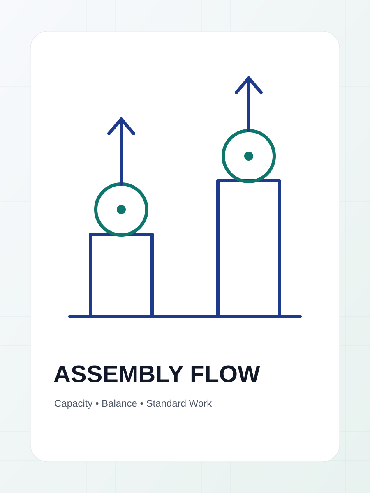
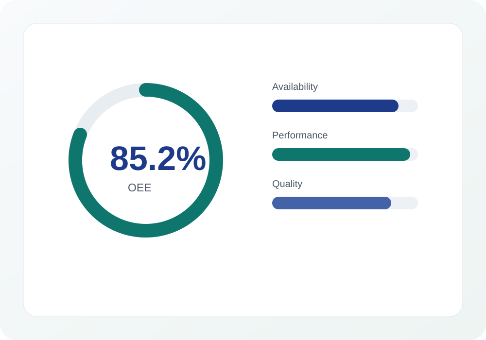
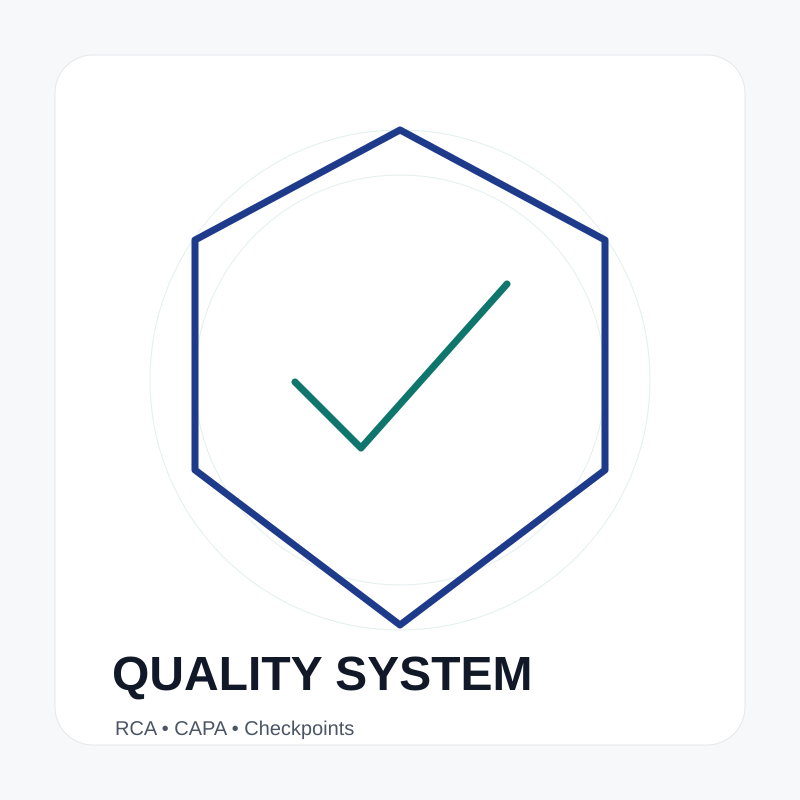
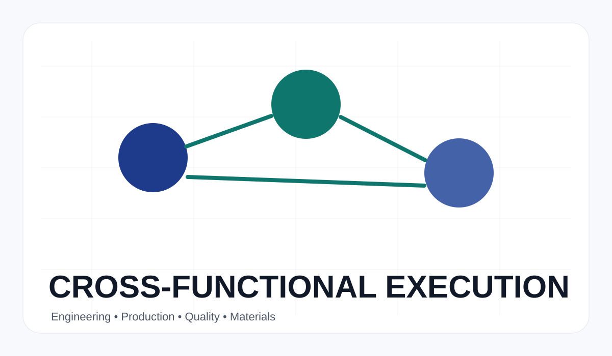
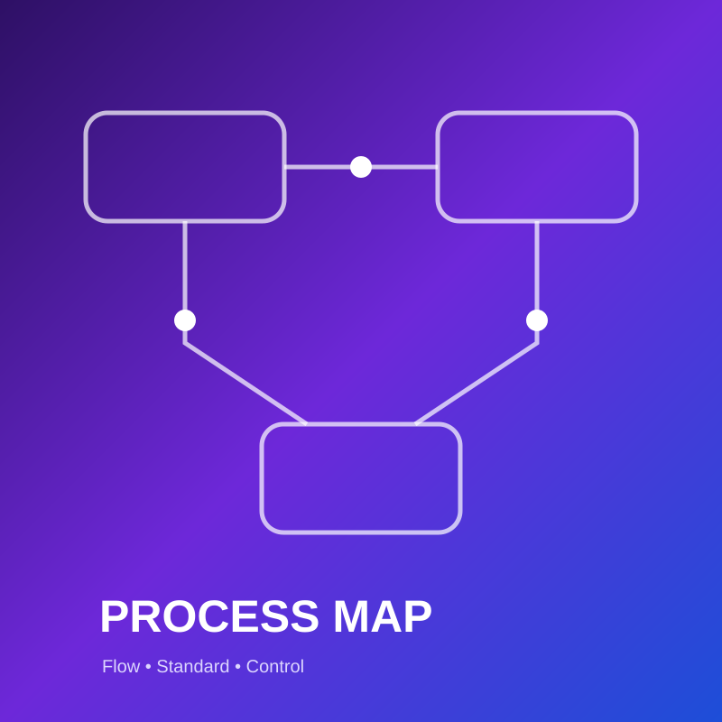
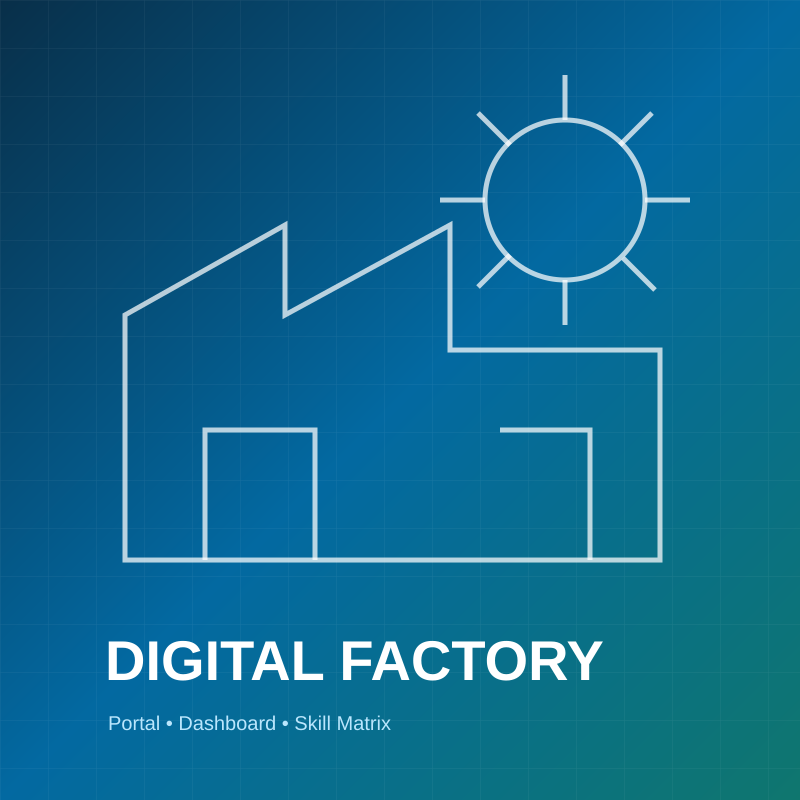

Engineering systems that make manufacturing perform.
Production and process engineering leader focused on output, OEE, quality, cost, standardization, and cross-functional execution across electronics assembly and process manufacturing.
Turning shop-floor complexity into repeatable performance.
I connect engineering analysis, production control, quality discipline, and practical execution to build stronger manufacturing systems.
I am a manufacturing improvement professional with experience spanning process control, process engineering, production management, and electronics assembly.
My work is centered on measurable operational outcomes: higher throughput, better OEE, lower downtime, fewer missed processes, lower rework, and stronger production discipline. I work across functions to translate data and root causes into standards that teams can execute.
Operational Excellence
Lean methods, RCA, CAPA, KPI control, standard work, waste reduction, and disciplined follow-through.
Manufacturing Systems
Process flow, line readiness, manpower support, tooling, skill matrix, production control, and quality checkpoints.
Leadership & Execution
Cross-functional coordination, TFT formation, abnormality response, milestone control, and management reporting.
Built for the factory floor and the boardroom.
A practical capability stack combining engineering fundamentals, production leadership, analytical problem-solving, and digital control.
Improvements measured in output, quality, OEE, and cost.
Selected projects reconstructed from verified operational achievements. Open each case study for challenge, approach, solution, and impact.
Change that shows up in the numbers.
Laptop assembly output improvement
Downtime reduction
Missed-process reduction
OEE improvement
Production cost per gram reduction
From process control to production leadership.
A decade-long path across quality, process control, engineering, production management, and operational improvement.
Management systems grounded in engineering discipline.
No certification claims are shown without evidence. This section presents verified methods and professional development areas used in Agung's work.
Lean Manufacturing
Waste reduction, flow improvement, standard work, line balancing, and continuous improvement.
RCA & CAPA
5 Why, Fishbone, corrective action, escalation routines, and abnormality prevention.
OEE & KPI Control
Availability, performance, quality, downtime, capacity, output, and management visibility.
Production Leadership
Daily execution, manpower arrangement, planning support, cost input, and cross-functional follow-up.
Process. People. Performance.
Abstract visual placeholders are included so the site remains deployment-ready. Replace them with verified factory, project, machine, training, and presentation photos.






How the work gets done.
Instead of invented testimonials, the portfolio highlights the operating principles consistently demonstrated by the experience and results.
Start with the actual process, quantify the gap, and align the team around the most important constraint.
Data-led diagnosis
Corrective action is only complete when the improved method becomes a repeatable operating standard.
Standardization mindset
Strong performance comes from engineering, production, quality, material, and leadership executing one system.
Cross-functional execution
Let’s build the next level of manufacturing performance.
Available for production leadership, process engineering management, operational excellence, and manufacturing transformation opportunities.